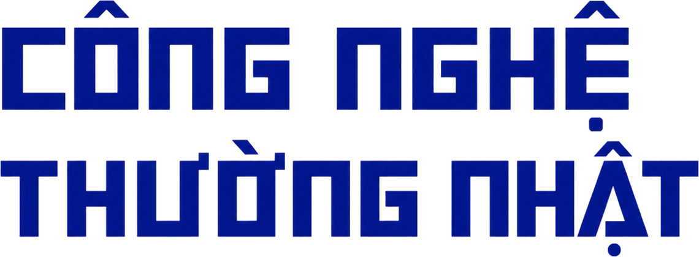

Hồ sơ giới thiệu
Trang thông tin độc lập giúp độc giả Việt Nam hiểu công nghệ mới bằng ngôn ngữ gần gũi, có bối cảnh và hữu ích trong đời sống.
Một điểm đến cho người yêu công nghệ
Công Nghệ Thường Nhật là trang thông tin độc lập về công nghệ, trí tuệ nhân tạo, thiết bị, startup, lập trình, điện toán đám mây và an toàn số.
Phạm vi biên tập
Mô hình ngôn ngữ, AI tạo sinh, agent và ứng dụng thực tế.
Laptop, điện thoại, phần cứng, gadget và trải nghiệm sản phẩm.
Khởi nghiệp công nghệ, gọi vốn, mô hình kinh doanh và đổi mới.
Bảo mật, mã độc, quyền riêng tư và kỹ năng an toàn số.
Ngôn ngữ, framework, công cụ và xu hướng dành cho developer.
Hạ tầng số, điện toán đám mây và tự động hóa triển khai.
Thiết kế ưu tiên việc đọc
Trang chủ tổ chức thông tin theo nhịp đọc tự nhiên: điểm tin nổi bật, cập nhật mới, nội dung được quan tâm và chuyên mục phân tích sâu.
Dành cho độc giả Việt Nam
Giải thích thuật ngữ và công nghệ mới bằng ngôn ngữ dễ tiếp cận.
Kết nối sự kiện với xu hướng, tác động và câu chuyện phía sau.
Ưu tiên kiến thức có thể áp dụng vào công việc và đời sống số.
Đề cao độ chính xác, nguồn tin và sự minh bạch trong biên tập.
Khám phá: Tin nóng, hero và chuyên mục giúp nhìn nhanh toàn cảnh.
Đào sâu: Bài liên quan, tag và tìm kiếm đưa người đọc đến đúng chủ đề.
Quay lại: Lưu bài, RSS và bản tin tạo thói quen cập nhật hằng ngày.
Sẵn sàng để phát triển
Website được xây dựng theo hướng hiệu năng, quản trị thuận tiện và dễ mở rộng khi nhu cầu nội dung tăng lên.
Xuất trang nhanh, tối ưu trải nghiệm đọc và hiệu năng.
Quy trình biên tập và xuất bản qua giao diện CMS.
Chuyên mục, tag và tìm kiếm không dấu giúp khám phá thuận tiện.
Metadata, Open Graph, dữ liệu có cấu trúc, sitemap và RSS.
Đăng nhập, lưu bài, bình luận và quản lý trải nghiệm cá nhân.
Thiết kế thích ứng mượt mà trên máy tính và thiết bị di động.
Cùng kết nối
Công Nghệ Thường Nhật hướng tới trở thành người bạn đồng hành đáng tin cậy của độc giả Việt trên hành trình khám phá thế giới số.